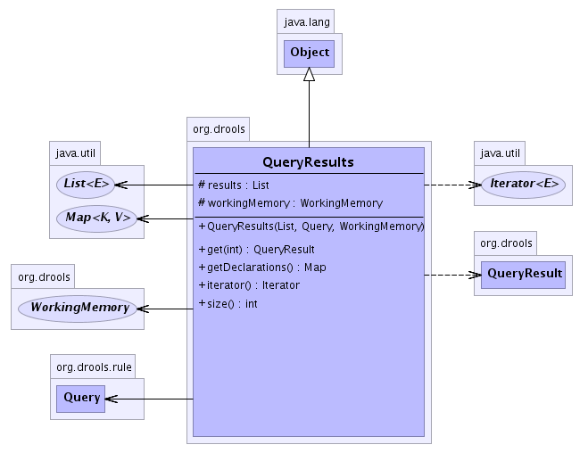

org.drools
Class QueryResults
java.lang.Object
 org.drools.QueryResults
org.drools.QueryResults
public class QueryResults
- extends java.lang.Object
Returned QueryResults instance for a requested named query. from here you can iterate the returned data, or
get a specific row. All the available Declarations used in the query can also be accessed.
-
- 
|
Method Summary |
QueryResult |
get(int i)
|
java.util.Map |
getDeclarations()
Return a map of Declarations where the key is the identifier and the value
is the Declaration. |
java.util.Iterator |
iterator()
Returns an Iterator for the results. |
int |
size()
The results size |
| Methods inherited from class java.lang.Object |
clone, equals, finalize, getClass, hashCode, notify, notifyAll, toString, wait, wait, wait |
results
protected java.util.List results
workingMemory
protected WorkingMemory workingMemory
QueryResults
public QueryResults(java.util.List results,
Query query,
WorkingMemory workingMemory)
get
public QueryResult get(int i)
iterator
public java.util.Iterator iterator()
- Returns an Iterator for the results.
- Returns:
getDeclarations
public java.util.Map getDeclarations()
- Return a map of Declarations where the key is the identifier and the value
is the Declaration.
- Returns:
- The Map of Declarations.
size
public int size()
- The results size
- Returns: